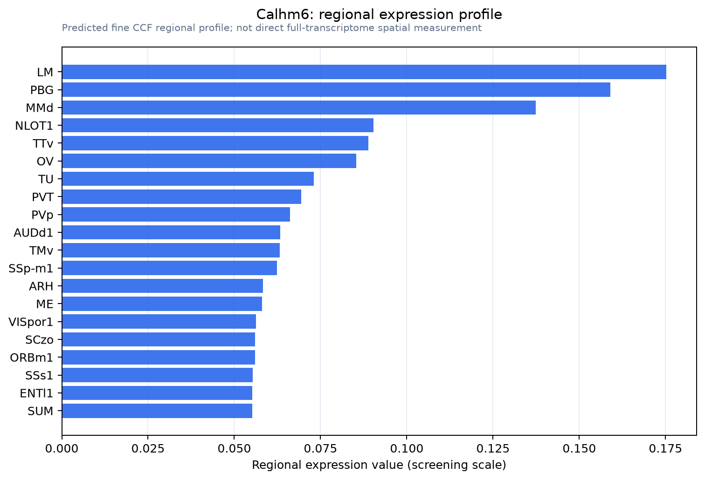

Calhm6
Calcium homeostasis modulator protein 6 (IFN regulatory factor 3-dependent NK-activating molecule) (INAM) (Protein FAM26F)
Spatial tier: RESTRICTED · Class: ION_CHANNEL · Top region: LM (Lateral mammillary nucleus) · Positive regions: 22/554
44.8Discovery Score
34.5Targetability Score
CEvidence grade C
What this means: Calhm6: fine CCF profile is restricted toward LM (top regions: LM, PBG, MMd, NLOT1, TTv; 22 positive regions); direct spatial validation is still required.
Function in LM: evidence, prediction, innovation
- Gene function
- CALHM6 (formerly FAM26F) belongs to the calcium homeostasis modulator family, a group of large-pore, voltage- and calcium-regulated channels structurally related to connexins and pannexins. The best-characterised member, CALHM1, is the non-vesicular ATP-release channel of taste receptor cells. CALHM6 itself is an interferon-inducible immune gene that shapes natural-killer-cell activation at the immune synapse; its conductance properties in neurons are uncharacterised.
- Region function
- The lateral mammillary nucleus is the mammillary head-direction relay: it receives vestibular information via the dorsal tegmental nucleus and projects through the mammillothalamic tract to the anterodorsal thalamus, generating the earliest directional-heading signal in the Papez circuit.
- Published in this region
- inferred No region-specific literature found. CALHM6 has been analysed only in immune cells and in disease genetics (Malik et al. 2017; Javed et al. 2024); within the family it is CALHM1 that has established neuronal and taste-cell ATP-release function (Taruno 2018).
- Predicted function
- Prediction: if CALHM6 forms a functional large-pore channel in lateral mammillary neurons it is predicted to act as an activity- and depolarisation-gated ATP-release pathway, allowing these high-firing head-direction relay cells to signal metabolically to surrounding astrocytes and to provide purinergic feedback onto their own excitability. Calhm6 deletion is predicted to leave head-direction tuning qualitatively intact but to reduce extracellular ATP and adenosine accumulation in LM during sustained rotation, blunt activity-dependent astrocytic calcium responses and degrade the stability of the directional signal over long recording sessions; the practical first test is whether CALHM6 protein is present at all, followed by ATP biosensor recording in slices from knockout mice.
- Innovation
- ★★★★★ 5/5 An immune-annotated channel gene with no neuroscience literature at all, mapped to a small but functionally crisp head-direction nucleus where the prediction is directly testable.
- Tools
- Calhm6 knockout mice generated in immunology studies; non-selective CALHM blockers ruthenium red, gadolinium and carbenoxolone; no selective ligand exists; anti-CALHM6 antibodies; LM neurons are accessible with retrograde AAV from anterodorsal thalamus and can be recorded in freely moving mice.
- References
Direct evidence located at the region
No Allen ISH section could be located at this region's centroid for the recorded experiments.
Look it up yourself: Allen Mouse Brain ISH for Calhm6Allen reference atlas: LM (structure 210)ABC Atlas MERFISH viewer(in the ABC Atlas choose dataset MERFISH-C57BL6J-638850-CCF, colour cells by gene "Calhm6" or by parcellation_substructure "LM")All genes confined to LM + 3-D brain
Direct spatial evidence
MERFISH REGION LOCATOR

Regional expression figure

Predicted WMB × fine-CCF profile; not direct full-transcriptome spatial measurement.
Spatial profile
Evidence and specificity
- Evidence status
- PREDICTED_FINE
- Direct sources
- None; predicted localization only
- Exclusive threshold
- 12 positive regions out of 554
- Spatial specificity
- 0.313
- Top-region fraction
- 0.064
- Filter status
- PASS
Interpretation limits
- Cell-type-to-region projection is imputed expression, not direct spatial measurement.
- Adult reference atlases do not establish stability across age, sex, strain, state, or disease.
- Transcript abundance does not guarantee protein abundance or genetic-tool performance.